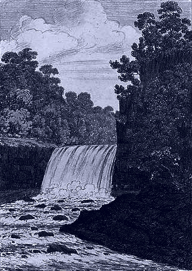
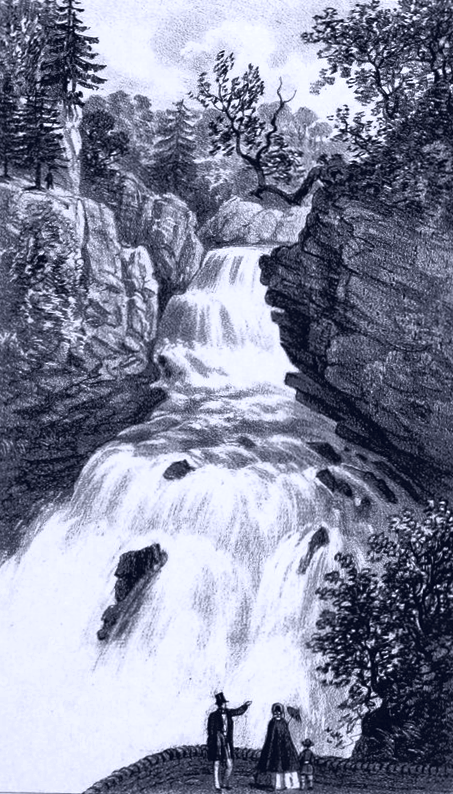
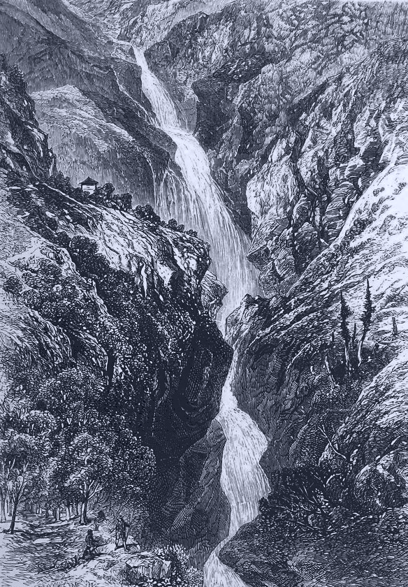

Il y a une écologie qui est un art d'habiter et de défendre les milieux vivants, et une écologie qui se présente comme un gouvernement de la nature et des sociétés. Elles ne sont pas compatibles. Ce livre vise à rouvrir le champ de bataille qu'est la définition de l'écologie. Il part du constat que cette définition est trop souvent laissée aux forces sociales dominantes qui ont partie liée avec le ravage que nous vivons. Il nous faut assumer maintenant de briser l'unité sacrée qu'on tente de construire autour de la question écologique. Au moment où les forêts brûlent sur tous les écrans et où un virus force les gouvernements à mettre à l'arrêt l'économie, il est temps de choisir son camp, et de prendre acte des lignes de fracture. Nous qui sommes de la génération formée à l'écologie par la vulgarisation des rapports du GIEC (Groupe d'experts intergouvernemental sur l'évolution du climat), par les experts médiatiques et par la petite discipline quotidienne, nous voulons renouer avec la longue histoire des résistances écologiques, depuis les luttes pour les communaux jusqu'aux ZAD. Nous ne voulons plus d'une écologie qui ne se reconnaît pas d'ennemis et serre la main à tout le monde. Nous ne voulons plus participer à cette grande comédie des éco-gestes insignifiants, des petits pas et des grandes marches, pendant que le monde continue de s'effondrer autour de nous.
Nous posons donc que notre écologie défend des milieux vivants, combat un ravage, et cela sans transition. À la fin du XIXe siècle, quand le concept d'écologie s'est formé pour désigner une économie de la nature, il était en concurrence avec le concept de mésologie, qui signifie littéralement : science des milieux. Si nous préférons revenir à la notion de milieu pour définir notre écologie, c'est parce que l'environnement et la nature ne définissent que des objets à administrer. L'environnement est une chose distante, étrangère et distincte des sujets qui l'habitent ; la nature est toujours considérée comme inhumaine, vide, inhabitée. La nature et l'environnement : au mieux on les gère, mais jamais on y vit. Le milieu, lui, ne sépare pas ce qui est lié : il est l'intrication des êtres qui l'habitent et l'élaborent. Ce qui définit un milieu comme vivant, c'est la qualité de la vie, des attachements, des dépendances et aussi des conflits qui s'y déploient. Cette qualité de vie ne se mesure pas à l'empreinte carbone, mais elle s'éprouve dans l'expérience d'habiter un milieu, qu'il s'agisse d'un foyer animé, d'une zone humide, d'un quartier, d'une forêt ou d'une contrée. C'est pourquoi notre écologie n'est pas comptable et n'établit pas ses priorités en fonction des seuls indicateurs scientifiques. Il n'y a aucun intérêt à vivre sur une planète décarbonée et riche en biodiversité si c'est pour être privé·es de ses libertés, surveillé·es et rationné·es. Une écologie des milieux vivants combat tout ce qui rend le monde inhabitable et inhospitalier, et donc en premier lieu la morale écologique par quoi on entend nous rendre inoffensif·ves.
S'il est question de luttes offensives, c'est parce qu'un ravage écologique est en cours. Une crise est temporaire. Un effondrement, une catastrophe, un désastre, sont des événements impersonnels, qui ont l'air de nous tomber dessus sans cause humaine identifiable et hors de notre portée. En revanche, un ravage est un processus, actif, agressif, mené par un sujet identifiable. C'est pour souligner ce lien entre une activité ravageuse, celle de l'économie capitaliste, et ses effets destructeurs sur les milieux vivants, que nous préférons ce terme à tous les autres. Contrairement aux écologistes qui attendent une catastrophe dans l'avenir, nous plaçons l'essentiel du ravage dans le passé. Sa progression à la surface du globe se mesure à l'artificialisation d'étendues toujours plus grandes : autoroutes, ports et aéroports géants, zones industrielles et commerciales, barrages, centrales nucléaires, réseaux énergétiques, monocultures, étalement urbain. Un milieu singulièrement hostile à la vie mais extrêmement profitable à la valorisation.
Au moment où nous terminons ce livre, ce milieu, celui de l'économie mondialisée, est le vecteur de propagation du Covid-19. On sait que les pandémies se multiplient ces dernières années en raison de la destruction des habitats naturels, de l'homogénéité génétique des animaux d'élevage, et de la mondialisation de l'économie. C'est pourquoi la vulnérabilité de nos sociétés aux pandémies qui se manifeste aujourd'hui n'est pas tant à attribuer au virus qu'à des causes humaines. Depuis plusieurs décennies, les gouvernements ont mené des politiques d'austérité, ont intensifié l'extraction des « ressources naturelles », ont amélioré leurs technologies de surveillance et leurs forces de police. Tout cela, pour maintenir à flot une économie qui ravage les milieux vivants. La ligne de fracture est donc nette. Cette période d'effroi et d'isolement montre à quel point il est urgent d'enquêter sur les moyens de transformer ou de démanteler les infrastructures du ravage, pour pouvoir élaborer des conditions d'existence nouvelles.
Dès maintenant, c'est-à-dire : sans transition. Par ces mots, nous ne voulons pas dire immédiatement, comme s'il s'agissait d'un caprice. Nous savons bien que le chemin sera long, difficile et miné. Mais il nous semble urgent de se défaire de certaines idées paralysantes, au premier rang desquelles celle d'une transition écologique qui serait à attendre de la part des décideurs économiques et politiques. Les dirigeants ont conscience des dangers écologiques depuis une cinquantaine d’années, mais ils n’ont rien fait. Cela devrait suffire à montrer que le problème n’est pas un manque de « prise de décision courageuse » ou de « bonne volonté » politique. Les gouvernements et les grandes entreprises sont tout aussi coincés que nous, parce qu'ils font partie du problème. Mais nous, nous ne sommes pas coincé·es de la même manière qu'eux : nous sommes coincé·es à travers leur monde, à travers l'économie et les systèmes sociaux qu'ils ont mis en place autour des énergies fossiles, de la voiture, et maintenant du numérique, un monde dont nous sommes aujourd'hui dépendant·es. Nous avons pourtant une marge de manœuvre, dans la mesure où nous parvenons collectivement à amoindrir notre dépendance à ce qui ravage la planète. C'est pourquoi une écologie sans transition est une écologie de rupture : il s'agit de rompre avec nos dépendances les plus destructrices, mais de rompre par des actes collectifs, solidaires, et de révolte. Rompre pour bloquer les avancées du ravage le plus vite possible, et rompre pour avoir les mains libres et pouvoir configurer nos propres usages du monde.
Les mains qui ont écrit ce livre sont lisses ou rugueuses, fines ou épaisses, divergent en teint, en taille, et sont marquées d'expériences différentes. Voilà pourquoi notre texte ne présente pas une unité parfaite de style et de ton. Nous revendiquons cette diversité collectivement. Que cela soit l'occasion de prouver que la multiplication des perspectives n'empêche pas l'élaboration d'une direction commune. Désobéissance Écolo Paris est un collectif qui rassemble des membres d'horizons variés, provenant d'un large spectre de sensibilités écologiques. Il s'est constitué à l'hiver 2018, après la démission du ministre de l'écologie Nicolas Hulot, puis a été initiateur des grèves étudiantes pour le climat à Paris. Au fil des marches, des lectures, des grèves, des occupations, des discussions publiques et privées, nous avons composé ces quelques réflexions que nous jetons là pour contribuer au débat stratégique.
Dans ce livre, nous commençons par tenter de nous dépêtrer de la morale écologique qui pèse sur nos épaules, qui masque les rapports de force, les asymétries sociales et la violence de ce monde. C'est sous la forme de cette morale que l'écologie nous apparaît quotidiennement, chaque fois que l'on exige de nous des petits gestes ou que le gouvernement se gargarise de petits pas, chaque fois qu'on individualise la faute et qu'on célèbre les héros du renoncement et de la science. Construire une écologie sensible, populaire et offensive qui puisse non seulement convaincre mais faire envie nécessite de se débarrasser de cette morale, pour élaborer une stratégie politique large. C'est pourquoi notre seconde étape consiste à identifier les forces ennemies qui instrumentalisent l'écologie, et les alliances possibles contre différentes formes du ravage : capitaliste, coloniale et patriarcale. En dernier lieu arrivent quelques propositions et prospections. Nous tirons les implications stratégiques de notre propos, et nous suggérons des pistes réelles et rêvées pour raviver le désir de vivre au présent avec un horizon commun. Nous n'attendons plus rien que de nous-mêmes, de ces « nous » qui sauront se constituer dans les initiatives et les combats écologiques.
Au cours de ce cheminement, nous prêtons une certaine attention au langage, que nous considérons comme un enjeu politique et non comme un simple vecteur de messages. Pour donner de la visibilité aux femmes et aux minorités de genre, nous avons donc décidé d’employer la version inclusive des noms, adjectifs et des accords de verbes dès que cela est pertinent stratégiquement. On ne s'étonnera donc pas de croiser parfois des « ami·es » ou des « allié·es », ainsi que des pronoms personnels qui deviennent « iel » et des démonstratifs qui deviennent « celleux ». Cela ne devrait pas trop gêner le confort de lecture – et puis, l'écologie ne consiste-t-elle pas à accepter de cheminer dans un certain inconfort pour que la vie s'en trouve ragaillardie ?